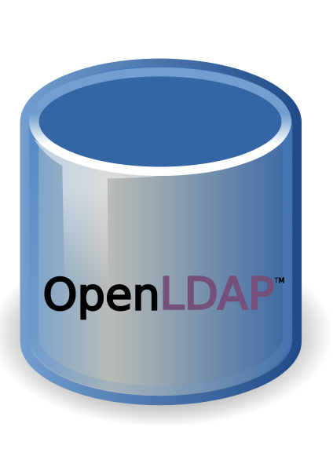
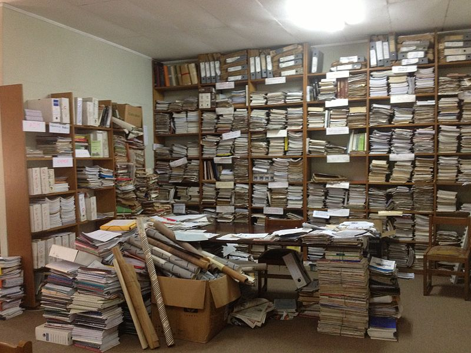
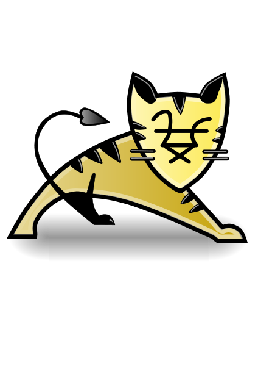

Integritat del servei i documentació tècnica
En general, una de les funcionalitats de qualsevol programa informàtic és permetre l’accés a la informació, però també assegurar la seva integritat. Diversos són els mecanismes que s’utilitzen per aconseguir aquests objectius i per poder portar-los a terme cal disposar d’una bona documentació.
El programa OpenKM s’encarrega de facilitar la gestió del repositori, la recuperació de documents, la importació per lots, l’exportació de documents, l’encriptació de la informació, la possibilitat d’utilitzar un diari d’activitat, l’automatització de tasques o l’ús de Workflows accions que us permetran realitzar una curosa administració segura i controlada de la informació.
Indexació dels arxius
Els programes que s’encarreguen d’emmagatzemar informació han de permetre realitzar recerques i accés a les dades invertint un temps molt petit. No es poden permetre trigar gaire a mostrar la informació sol·licitada.
La seguretat informàtica implica: confidencialitat, integritat, disponibilitat i autenticació o autentificació.
La indexació d’arxius permet accelerar els temps de cerca dels arxius emmagatzemats en l’aplicació i, per tant, en facilita també l’accés.
La funcionalitat d’indexar arxius no està implementada sempre. OpenKM és un gestor que sí que gaudeix d’aquesta capacitat, de fet, un gestor d’arxius web que es consideri bo hauria d’implementar aquesta característica.
OpenKm utilitza per defecte un indexat molt flexible mogut per Apache Lucene. Part del seu potencial es basa en l’ús adaptable a l’idioma. Amb versions anteriors a la 5.1 editant el fitxer OpenKM.cf g podeu configurar a mida la propietat hibernate.search.analyzer. Amb versions posteriors accedint amb rol administrador ho podreu configurar a la finestra d’administració.
Per defecte OpenKM utilitza org.apache.lucene.analysis.standard.StandardAnalyzer, que funciona sobre l’idioma anglès. Si voleu realitzar canvis disposeu de les opcions:
Per exemple, per tractar xinès simplificat es requereix el paquet org.apache.lucene.analysis.cn.smart
- org.apache.lucene.analysis.en.EnglishAnalyzer (idioma anglès)
- org.apache.lucene.analysis.es.SpanishAnalyzer (idioma espanyol)
- org.apache.lucene.analysis.fr.FrenchAnalyzer (idioma francès)
- org.apache.lucene.analysis.it.ItalianAnalyzer (idioma italià)
- org.apache.lucene.analysis.de.GermanAnalyzer (idioma alemany)
- org.apache.lucene.analysis.el.GreekAnalyzer (idioma grec)
Si es dóna el cas que heu configurat l’analitzador de recerques abans d’iniciar el programa, l’indexat Lucene es crearà utilitzant org.apache.lucene.analysis.standard.StandardAnalyzer, però si voleu realitzar un canvi necessitareu fer un rebuild des de la interfície gràfica: Administració/Rebuild indexes.
Mecanismes de seguretat del sistema
Qualsevol aplicació que funcioni en un entorn compartit requereix algun mecanisme de seguretat que permeti controlar qui entra o qui surt del sistema, i què pot fer o no pot fer un usuari sobre els objectes que conformen l’aplicació.
L’administració de la seguretat es realitza amb la gestió dels permisos que poden tenir fitxers i carpetes assignats als usuaris i als rols.
- 
- OpenLDAP és una implementació lliure i de codi obert utilitzada a ClearOS.
La gestió dels accessos, ja sigui a nivell del control d’usuari o bé amb l’administració de la seguretat de les connexions, és també un punt important a tenir en compte. Per exemple, OpenKM incorpora ClearOS LDAP, que és una de les opcions més utilitzades com a millores de seguretat.
Al gestor OpenKm la seguretat s’aplicarà en diferents línies: els usuaris tindran uns determinats rols i permisos que els permetran l’accés a determinats continguts, el control d’aquests perfils es realitza mitjançant grups, l’autenticació d’usuaris es realitza mitjançant mecanismes i protocols segurs i les connexions estan protegides amb protocols de seguretat.
Rols i permisos als usuaris
Un rol és un perfil que es pot relacionar amb un o diversos usuaris, igualment un usuari pot tenir diferents rols. Per exemple, si l’administrador del programa es diu Miquel tindrà un usuari anomenat id_Miquel, depenent de la tasca que hagi de fer aquest usuari serà més útil treballar amb rol d’administrador, o en determinades ocasions fer-ho amb rol d’usuari bàsic.
OpenKM treballa amb un entorn de rols i, per tant, quan assigneu o traieu permisos, en realitat, sempre s’estaran aplicant les configuracions de seguretat sobre els rols.
Els paràmetres que es poden gestionar són:
OpenKm utilitza per defecte l’autenticació sobre HSQLDB (HyperSQL DataBase).
- Lectura: permet accedir al contingut i consultar-lo.
- Escriptura: permet accedir al contingut i modificar-lo.
- Eliminar: permet eliminar l’objecte.
- Seguretat: permet gestionar la seguretat de l’objecte.
Els dos rols predefinits a OpenKM són: ROLE_ADMIN i ROLE_USER. El rol ROLE_USER és obligatori per a tots els usuaris. OpenKm l’utilitza internament en la gestió de connexions. El rol ROLE_ADMIN permet administrar privilegis, veure tots els continguts i realitzar accions sense cap restricció (vegeu la figura).
És molt important ajustar el rol dels usuaris. Un usuari ha de tenir els privilegis imprescindibles per realitzar amb garanties la seva tasca, però no n’ha de tenir mai excés de permisos.
Convidar usuaris o grups a un contingut
La correcta creació i administració d’usuaris requereix una tasca prèvia de planificació. Dependrà de les necessitats dels usuaris, de la naturalesa de la informació i de l’estructura de l’organització, la decisió d’establir una estratègia de gestió d’usuaris o no.
Els gestors d’arxius web han d’estar correctament organitzats per esdevenir útils en tot el seu potencial. L’elecció de les característiques que han de tenir els diferents usuaris i grups és un dels punts més importants a tenir en compte per tenir èxit.
Si s’ha planificat correctament, convidar usuaris o grups a pocs o molts continguts no requerirà molta dedicació, però una mala planificació pot provocar una pèrdua de temps enorme.
És important que identifiqueu els rols, grups i usuaris en funció dels continguts als quals no han de tenir accés. El més habitual no és compartir un document amb un usuari en concret, sinó que gairebé sempre compartireu un document amb un grup que reuneix les mateixes característiques. També serà molt important deixar ben clar quins són els permisos vinculats a cada rol.
Autenticació d'usuaris
L’autenticació d’usuaris no comença i acaba amb la comparació entre l’usuari i contrasenya indicats per l’usuari. És necessari implementar protocols segurs de comunicació, polítiques de permisos i administració de rols.
Per permetre la connexió d’un usuari al programa s’utilitza el protocol CAS. Aquest protocol permet l’accés a diferents parts de l’aplicació sense la necessitat d’identificar-se constantment. Perquè funcioni haureu de connectar mitjançant una connexió HTTPS.
Connexió segura amb SSL
Un programa com OpenKM ha d’oferir solucions en molts diversos àmbits. En el cas de l’administració de connexions segures el programa necessita utilitzar determinades eines externes. Un exemple és vincular el protocol SSL al programa.
CAS: Central Authentication Service
SSL (Secure Sockets Layer) és un conjunt de protocols que tenen per objectiu assegurar comunicacions segures a Internet mitjançant l’encriptació de dades.
Si per exemple el vostre sistema operatiu és Ubuntu i voleu treballar amb SSL heu de seguir els següents passos:
1. Permetre accedir al mòdul dins la configuració d’Apache:
$ sudo mkdir /etc/apache2/ssl $ sudo /usr/sbin/make-ssl-cert /usr/share/ssl-cert/ssleay.cnf /etc/apache2/ssl/apache.pem $ sudo a2enmod ssl
2. Comprovar que el port 443 està escoltant (reviseu /etc/apache2/ports.conf):
Cerca i interpretació de documentació tècnica
Podeu treballar amb OpenKm en la seva versió gratuïta o bé la versió de pagament. Una de les principals diferències és que la versió gratuïta ofereix documentació tècnica suficient i accés a fòrums de debat, mentre que la de pagament permet realitzar consultes als tècnics.
Amb la versió gratuïta la documentació a la qual es té accés està escrita en gran part en anglès. Trobareu algunes traduccions en castellà, però es recomana consultar la versió original. El nivell d’anglès necessari és bàsic, es traca de documentació tècnica.
Els fòrums vinculats a OpenKm ofereixen molta informació. Aquí trobareu la solució a problemes que altres usuaris s’han trobat en el passat. Si us topeu amb algun problema tècnic no dubteu a buscar algun fil de treball al fòrum, guanyareu molt de temps.
La quantitat d’informació accessible des d’Internet és incalculable. Cada segon que passa s’hi afegeixen, modifiquen i destrueixen continguts. És per aquest motiu que si realitzeu una cerca d’informació referent a OpenKM obtindreu un número molt elevat de respostes. Tot i que es recomana explorar la xarxa, a continuació teniu una sèrie d’enllaços que estan revisats i us poden resultar de gran ajuda:
- http://www.openkm.com/: pàgina principal d’OpenKm. Aquí trobareu molta informació comercial i petits detalls tècnics que us ajudaran molt a ubicar el programa.
- http://wiki.openkm.com/: pàgina principal de la documentació d’OpenKM. Basada en una plataforma wiki organitza la documentació en tres gran blocs: instal·lació, usuaris i desenvolupadors.
- http://wiki.openkm.com/index.php/Installation_Guide: apartat dedicat a la instal·lació del programa. És molt recomanable que llegiu aquesta part. Teniu informació bàsica, de tractament de la base de dades, seguretat, correu o còpies de seguretat.
- http://wiki.openkm.com/index.php/User_Guide: aquí teniu la guia d’usuari. Per començar és suficient. Tot el que ha de saber un usuari bàsic està en aquesta guia.
- http://wiki.openkm.com/index.php/Curso_Workflow: a l’apartat de desenvolupadors disposeu d’aquest curs. Conté vídeos explicatius dels conceptes més importants dels Workflow.
- http://wiki.openkm.com/index.php/Repository_backup: aquesta secció us indicarà com realitzar una còpia del repositori.
- http://wiki.openkm.com/index.php/Repository_import: aquesta secció us indicarà com importar un repositori ja existent.
- http://wiki.openkm.com/index.php/Repository_view: l’administració del repositori és una tasca molt delicada. Abans de fer res seria recomanable que miréssiu aquesta web.
- http://wiki.openkm.com/index.php/Activity_log: aquí teniu un petit manual per estudiar els logs des de la interfície gràfica.
- http://wiki.openkm.com/index.php/Automation: OpenKM permet establir regles per generar automatismes. Dins de les funcions de l’administrador del sistema hi ha realitzar aquestes tasques.
- http://wiki.openkm.com/index.php/Scripting_-_OpenKM_6.2: la realització d’scripts vinculats a l’OpenKM esdevé molt important si arribeu a un determinat punt de desenvolupament a mida.
- 
- És important disposar d'informació, però és igual d'important tenir facilitat d'accés a aquesta informació.
Per interpretar la documentació tècnica sempre és bo tenir com a referència glossaris de terminologia informàtica que ens ajudin a comprendre els conceptes:
- http://www.google.com/Top: directori de Google sobre terminologia informàtica en català. Accediu a la categoria Informàtica, i a continuació a la categoria Terminologia.
- http://en.wikipedia.org: la Wikipedia és una molt bona aliada, i cal tenir ben present que les definicions dels articles poden ser millors o pitjors, més completes o menys, en funció de l’idioma que hàgim escollit. Així, si cerquem conceptes informàtics, ben bé sempre la informació més completa la trobareu si seleccioneu l’idioma anglès del menú de l’esquerra de la pàgina web. El motiu és que actualment la majoria de programari prové de països anglosaxons per motius econòmics i empresarials.
Aprendre a fer cerques avançades a Google tampoc no està mai de més: heu d’accedir a la secció Query Input i, dins l’apartat Part I: Query Input, clicar a l’enllaç Special Characters: Summary. És un resum dels paràmetres que es poden fer servir per refinar les cerques que fem a Google, en el qual s’explica detalladament l’ús dels operadors.
També pot resultar molt eficaç consultar llibres o parts de llibres gratuïtament per cercar documentació tècnica. Wikilibros és una pàgina web especialitzada en la difusió de llibres gratuïts, a l’estil Wikipèdia però enfocada als llibres.
L’idioma, segons el nivell que tingui cadascú, pot resultar un inconvenient per interpretar algunes paraules de vocabulari, que no és tècnic, però ajuda a comprendre’l. Per això, és molt recomanable tenir sempre a mà un bon diccionari en línia que ens permeti consultar paraules i, si és el cas, traduir pàgines web senceres:
- http://translate.google.es: traductor de pàgines web de Google. Només cal escriure la pàgina web i automàticament us la tradueix.
- http://www.wordreference.com/es: diccionari d’anglès a castellà i viceversa. També permet treballar amb molts altres idiomes i accedir a fòrums que complementen els continguts.
Com a últim consell, si estem cercant documentació específica sobre un gestor d’arxius, el primer que hem de fer és investigar a fons la pàgina web principal on hem trobat el gestor d’arxius, i buscar altres referències a fòrums o bitàcoles que puguin debatre o comentar el programa.
Documentació dels gestors d'arxius web
El procés de documentació és una tasca imprescindible. Imagineu què passaria si no es documentés la feina feta, on aniríem a buscar solucions? Sempre que ens topem amb algun problema anem a buscar-ne les possibles causes i les solucions a la documentació del programa o als fòrums que tracten el tema. L’administrador ha de contribuir al procés de documentació afegint material.
És una bona pràctica documentar el procés d’instal·lació, configuració, manteniment i desinstal·lació d’OpenKM. Aquesta acció és una ajuda per l’administrador i per l’equip d’informàtics.
En moltes ocasions seguireu els passos que indica un desenvolupador durant el procés d’instal·lació d’un nou programa i tindreu problemes. Cal deixar escrit el punt on es detecta el problema, què l’ha originat i quin efecte ha produït. Seria molt interessant reportar també si aquesta acció ha provocat alguna cosa en una altra aplicació.
La consulta de fitxers de log ajuden molt a documentar, ja que són una font enorme de dades i accions, algunes de les quals poden passar desapercebudes.
Documentació del procés d'instal·lació i configuració d'OpenKM
La versió d’OpenKM utilitzada durant la instal·lació no requereix de molta intervenció per part del tècnic. El paquet d’instal·lació conté tot el necessari per fer funcionar el gestor sense la necessitat de canvis.
Tot i així és una bona oportunitat utilitzar una versió reduïda o d’anàlisi (testing) per fer una documentació base. És molt important identificar totes les decisions que s’han pres durant el procés d’instal·lació per l’anàlisi de situacions posteriors.
En cas contrari, la no generació de documentació pot provocar errors més greus i fins i tot influir en el mal funcionament d’altres programes instal·lats al sistema.
Durant la instal·lació d’OpenKM és important que anoteu la data i l’hora exacta de totes les accions que realitzeu. Per exemple, és força habitual que instal·leu una versió d’avaluació en un sistema on ja hi ha un Tomcat instal·lat; no serà casualitat que sorprenentment aquell Tomcat instal·lat i que funcionava correctament deixi de funcionar. Coneixent quan heu realitzat les vostres accions i quan s’han generat problemes en altres zones, podreu establir relacions i recuperar els sistemes.
Durant el procés d’instal·lació de l’aplicació és recomanable documentar tota una sèrie de punts que es detallen a continuació:
- Elecció i justificació de les versions de programari utilitzades. Sobretot pel que fa a la versió del JRE (Java Runtime Environment).
- Característiques de la màquina que allotjarà el programari.
- Si ha calgut, canvis de configuracions de programes externs a OpenKM.
- Dispositius utilitzats: mòbil, tauleta, ordinador, etcètera.
- Altres aspectes. Pràcticament cada instal·lació és diferent a la resta en funció de l’entorn on s’executa.
Habituament s’instala el programari en una màquina servidor.
La documentació no es realitza en acabar un procés; sempre s’ha de documentar al mateix temps que es treballa. No seguir aquesta premissa durà a situacions on s’oblida reportar dades, i recordeu que s’ha de reportar tot. Per exemple, en distribucions Linux és habitual haver de visitar un repositori en la recerca de versions més actuals d’alguns mòduls, doncs abans de fer-ho anoteu què heu d’actualitzar i per què.
A mode d’exemple, dades documentals importants són:
- Mòduls addicionals instal·lats que complementen l’ús i les funcionalitats de l’aplicació.
- Aspectes de configuració relacionats amb la interfície gràfica de l’usuari, com per exemple la facilitat d’accés en determinats espais de l’aplicació, la visualització i l’organització dels arxius, etc.
- Aspectes de configuració relacionats amb l’aplicació mateixa que permeten adaptar les funcionalitats a les necessitats de l’organisme, persona o empresa que utilitzi l’aplicació, com ara la configuració específica de la base de dades, configuració del servei de correu de l’aplicació, configuració del motor de cerca, etc.
- Configuració del servidor de l’aplicació web adaptada a les necessitats reals que pugui tenir l’aplicació, com podria ser una forta demanda d’usuaris que faran servir l’aplicació, control de seguretat, etc.
Una bona manera de començar a fer la documentació és consultar l’índex de la guia d’instal·lació de l’aplicació. Es poden analitzar visualment els punts de l’índex que s’han anat fent durant el procés d’instal·lació i fer-ne una concreció, adaptada a les necessitats de documentació que es creguin necessàries.
Tota la documentació necessària per realitzar la instal·lació d’OpenKM i configurar el programa segons els requeriments la trobareu a:
Podreu accedir a documentació referent a:
- Instal·lació bàsica per a Windows, Linux i Mac.
- Instal·lació i configuració detallada.
- Primers passos amb el gestor d’arxius documentals web, amb l’entorn col·laboratiu, etc.
Documentació de les incidències i solucions
Al llarg del temps de vida de l’aplicació web, poden sorgir moltes situacions imprevistes que poden provocar diversos tipus d’incidències en el funcionament de l’aplicació, i per extensió en el funcionament de l’empresa o l’organització que l’estigui fent servir.
Per mirar de fer front a totes aquestes circumstàncies adverses, cal fer un esforç i imaginar-se totes les situacions que són potencialment probables de succeir. Després cal mirar de trobar-ne la solució i fer-ne una documentació.
Tant les situacions que són probables que arribin a passar, com les que succeiran, cal que estiguin adjuntes a la documentació d’instal·lació i configuració de l’aplicació web. Documentar una incidència pot consistir senzillament a fer una breu descripció del problema i una descripció de la solució que s’ha trobat, si és que se n’ha trobat alguna, o indicar que encara està pendent de resoldre’s.
Un fòrum arreplegarà molta informació i pot ser una molt bona opció per ajudar-vos a documentar.
A banda de mirar de preveure les situacions de risc també convé disposar d’eines i documentació tècnica que ens puguin ajudar a afrontar les situacions inesperades. Com més coneixement tinguem del funcionament i implementació de l’aplicació web, més fàcil serà que hi puguem trobar una solució.
Resulta de gran utilitat conèixer els codis d’error d’una aplicació. Gràcies a la pràctica de documentar els errors apareguts en diferents entorns es pot generar una llista. OpenKM codifica els errors utilitzant un codi amb la plantilla: OKM-XXX-YYY.
- OKM: indica que es tracta un codi d’OpenKM
- XXX: indica l’origen de l’error.
- YYY: indica la causa de l’error.
A mode d’exemple, uns orígens d’error estarien identificats:
- OKM-001 Problema amb l’obtenció de carpetes del servidor.
- OKM-002 Problema amb l’obtenció de documents del servidor.
- OKM-003 Problema amb la connexió remota amb el servidor.
- OKM-004 Problema descarregant una carpeta del servidor..
- OKM-005 Problema pujant un document al servidor.
- OKM-006 Problema amb la sessió de servidor.
- OKM-007 Problema d’autenticació.
- OKM-008 Problema amb una consulta.
- OKM-009 Problema amb les propietats dels grups (metadata).
- OKM-010 Problema amb la notificació d’un servei.
Algunes de les causes dels problemes estan identificades com:
- 001 Causat pel repositori.
- 002 No funciona l’objecte.
- 003 No existeix l’objecte.
- 004 Causat per estar bloquejat.
- 005 Causat per estar desbloquejat.
- 006 Causat per un motiu general.
- 007 Causat per un motiu general (la documentació no especifica diferència amb el codi 006).
- 008 Causat per l’entorn GWT.
- 009 Causat per denegació d’accés.
- 010 Causat per no suportar el tipus mime.
Tota la llista de codificació d’errors es troba a: http://wiki.openkm.com/index.php/Error_codes
Totes aquestes situacions han de quedar ben documentades en un arxiu on s’indiqui clarament la causa del problema i la solució aportada, en cas d’haver-la trobat.
Arxius de registre
La depuració d’errors es realitza a OpenKM bàsicament consultant els fitxers de log que genera el propi programa. Els fitxers de log són a la carpeta:
C:\openkm-6.4.14\tomcat\logs
o bé al directori:
var/lib/tomcat/logs
OpenKM genera molta informació que emmagatzema en aquests logs, i per detectar errors o extreure’n informació molt precisa de l’ús del programa és un molt bon recurs. La següent línia de codi mostra el tràfic que s’ha generat entre un client i el servidor durant el procés de desactivació del xat d’un usuari:
0:0:0:0:0:0:0:1 - - [26/Feb/2015:18:43:45 +0100] "GET /OpenKM/admin/img/action/chat_disconnected.png HTTP/1.1" 200 717
Si necessiteu extreure dades molts precises d’un cas en concret és recomanable netejar el registre i fer una nova adquisició de dades. Atenció, netejar el registre no vol dir eliminar-lo; netejar el registre implica realitzar una còpia de seguretat de l’original abans d’eliminar-ne el contingut.
- 
- Tomcat registra les accions que es realitzen sobre la plataforma.
Per iniciar un procés de depurat cal:
- Pareu Tomcat.
- Feu una còpia de seguretat de tots els logs i esborreu-ne els antics.
- Editeu el fitxer C:\openkm-6.4.14\tomcat\conf\log4j.properties
- Indiqueu la classe que voleu depurar (heu de tenir alguna dada de l’error que s’està produint)
- Inicieu Tomcat.
- Intenteu reproduir les mateixes accions que generaven l’error.
- Quan es produeixi l’error reviseu el contingut del fitxer C:\openkm-6.4.14\tomcat\logs\catalina.log.DATA_ACTUAL
Davant de qualsevol situació que genera errors hauríeu d’anar directament a consultar el registre de logs i estudiar què ha passat.
Desinstal·lació d'OpenKm
Per desinstal·lar OpenKM s’ha de parar primer el servei d’OpenKM. Amb Windows:
C:\openkm-6.4.14\tomcat\bin\shutdown.bat
i amb Linux:
$ /RUTA/openkm-6.4.14-community/tomcat/bin/shutdown.sh
A continuació cal que s’executi el programa de desinstal·lació. En sistemes Windows:
C:\openkm-6.4.14\uninstall
i en distribucions Linux:
$ /RUTA/openkm-6.2.4-community/uninstall
Sempre és recomanable realitzar la desinstal·lació seguint les indicacions del desenvolupador i no optar per esborrar els fitxers directament.